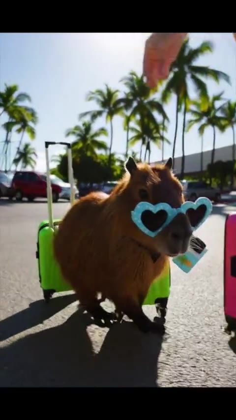

SMALL FRIEND / BIG IMAGINATION
Very busy
doing capy things.
A workout. A beach day. A whole Eurotrip. Three little adventures with absolutely no rush.
Meet the capys ↓
THE STORY SHELF
Pick a little adventure.
Original generated and edited films from the Capybara archive. Tap play; sound is yours to choose.
Capy Work out
The couch is comfortable. The workout can probably wait. A tiny domestic workout comedy.
CAPYBRI
Heart-shaped shades, beach drinks, a pink surfboard and an extremely relaxed holiday.
Indy Capy Eurotrip
A hat-wearing traveler takes the scenic route: plane windows, café stops, canals and one very long adventure.
CAPYBRI / THE HOLIDAY SHORTS
Five tiny postcards.
From the original CapyBri album: airport arrivals, coconut breaks, surf, moonlight and a very soft landing. Ten seconds each. These source clips are silent.
Capybara Adventures Begin
The luggage is bright. The sunglasses are on. Holiday mode starts at the airport.
Capybaras on Lanikai Beach
A coconut, a flower and absolutely no urgent plans.
Surfing Capybaras Adventure
Tiny surfers. A very large wave. A little sunset chaos.
Tropical Luau With Capybaras
Moonlight, palm trees and a pineapple with a flair for drama.
Capybara Luxury Retreat
The whole schedule is a soft bed and an ocean view.
Three recovered Desktop edits and five selected short films from the CapyBri album. AI imagery and playful edits are part of the work; the films are fictional adventures. The wider Capybara and TikTok archive remains open for recovery.